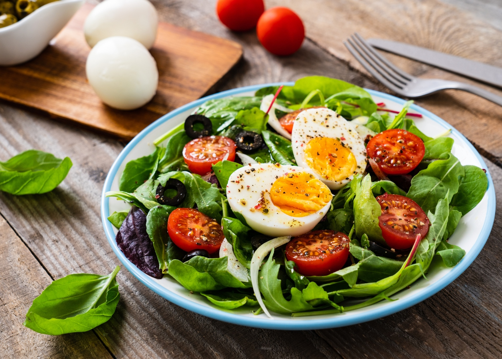
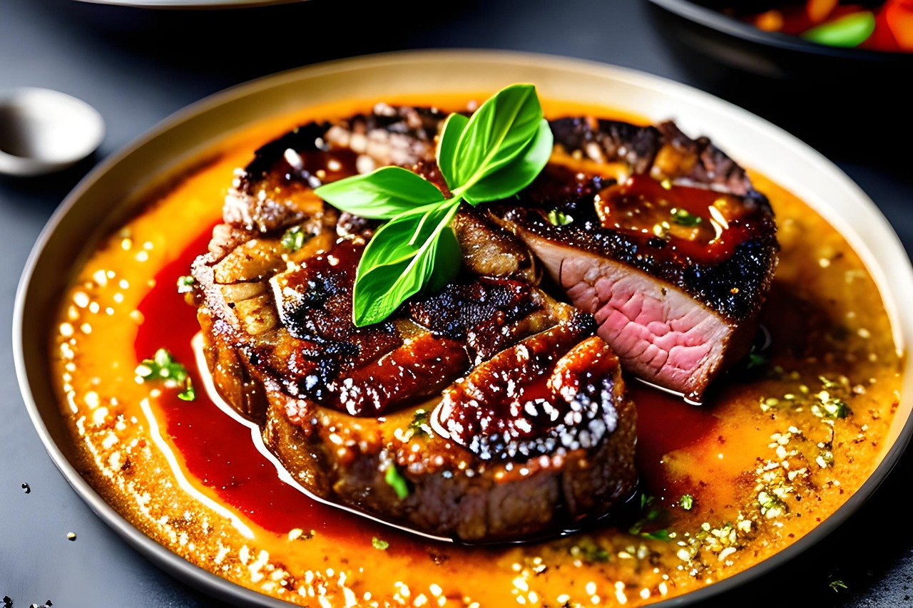
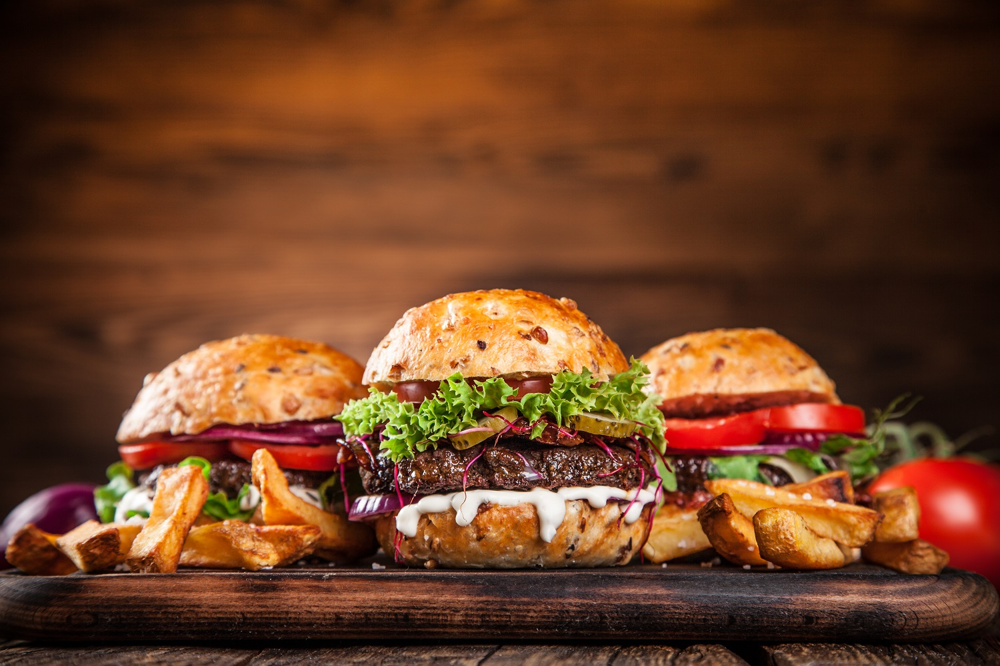

Pratos populares
A comida popular no Brasil varia de acordo com a região, mas três pratos são bastante comuns no dia a dia: a salada, o bife e o hambúrguer. A salada, feita com legumes frescos e coloridos, é uma opção leve e saudável, perfeita para acompanhar diversos pratos ou até mesmo como refeição principal em dias mais quentes. O bife, por sua vez, é um clássico da culinária brasileira, geralmente grelhado ou frito, e pode ser servido com arroz, feijão e batatas. Já o hambúrguer, embora de origem americana, conquistou o paladar dos brasileiros e ganhou versões criativas em lanchonetes e fast foods, com carnes de diversos tipos e combinações de queijos, molhos e vegetais. Esses pratos são simples, mas fazem parte do cotidiano de muitas pessoas, agradando a diferentes gostos e ocasiões.
Salada

Bife

Hambúrguer
